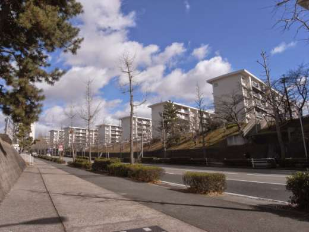

Danchi Lovers Unit / since 2012
団地愛好家集団チーム4.5畳
団地は日本の原風景！
公団住宅・公営住宅をはじめとする団地を撮影し、収集し、分類する。給水塔、ツインコリダー、市街地住宅、ダンメン、アニマルライド——住棟のディテールを愛でながら、団地を「鑑賞の対象」として世の中に手渡していく大阪発のチームです。団地同人誌『団地ブック』の発行を軸に、見学ツアーやトークイベント、ラジオで日々団地啓蒙活動を実施中。

01
最新情報
News- 文学フリマ大阪14「う-62」に新刊『団地ブック９』で出店。インテックス大阪2号館。今号はゲスト執筆者を迎え、静岡市の団地見学ツアーをフィーチャー。
- 2026年新刊『団地ブック９』完成。特集は「団地 BACK TO BASICS」。既刊の各種団地ブック・増刊号も頒布します。
- おもしろ同人誌バザール大阪に『団地ブック８』で出店。うめだMホール 桜I・IIルーム「-63」。
過去の活動をすべて見る →
最新の告知はX（旧Twitter）@team4_5 でお知らせしています。
03